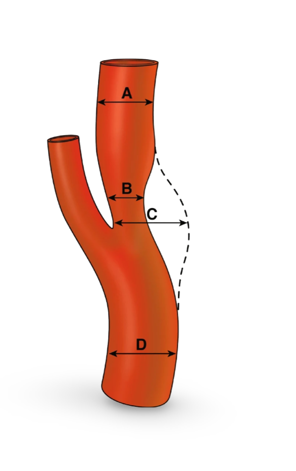

CAS Calculator - Carotid Artery Stenosis Tool
A: Diameter of normal distal ICA beyond the bulb where the artery walls are parallel (mm)
B: Luminal diameter at the site of maximal narrowing (mm)
C: Diameter of estimated original width of the ICA at the site of maximal narrowing (mm)
D: Diameter of normal CCA proximal to the bulb where artery walls are parallel (mm)
Generate Report
Clear

References:
North American Symptomatic Carotid Endarterectomy Trial Collaborators, Barnett, H. J. M., Taylor, D. W., Haynes, R. B., Sackett, D. L., Peerless, S. J., Ferguson, G. G., Fox, A. J., Rankin, R. N., Hachinski, V. C., Wiebers, D. O., & Eliasziw, M. (1991). Beneficial effect of carotid endarterectomy in symptomatic patients with high-grade carotid stenosis. The New England journal of medicine, 325(7), 445–453.
Randomised trial of endarterectomy for recently symptomatic carotid stenosis: final results of the MRC European Carotid Surgery Trial (ECST). (1998). Lancet (London, England), 351(9113), 1379–1387.
NASCET Stenosis:
-
ECST Stenosis:
-
CC Stenosis:
-
Recommendations
Stenosis Report
Close